81% chance at least one night gives you the core — a better draw than these dates usually give (70% base rate). Full forecast →
Cloud in the core window, updated hourly · Sun 09 Aug 17:05 EDT
| Home pier | 42.82° |
| Cabin | 45.09° |
| Lake spot | 45.24° |
| Move it UP by | +2.3° |
Different number, same word: elevation above sea level is ~666 m at the lake (cabin still unmeasured). That one goes into virtualgps and Stellarium, not the mount.
You're driving Route 3 north at dusk every night to look for moose anyway. The lake is where that drive ends — so the core gets shot from the verified 204.4° site every clear night, and the cabin's low southern horizon never has to be trusted.
Tracks how the predicted core-window sky cover for each night moves as the forecast run date advances. Re-run python3 log_forecast.py daily and the chart extends.
Decision point Aug 8. Pivot night is Aug 12/13 — Perseid maximum and new moon, the only night carrying something the others don't. Go if its core window is under ~30% cloud. Sky cover, not PoP — an overcast rainless night reads 0% precipitation and is a total loss.
| Canon | LP-E17 batteries — swap at the 10:45 landscape→portrait break, not when it dies |
| Dew strap | USB power bank — ~5 h off 10,000 mAh |
| 6SE | Lead-acid direct, 12 V, no regulator — its native supply |
| SAM Mini | 2×AA lithiums |
Four independent supplies means no single point of failure. A blown fuse or a bad cable takes out one thing, not the session.
Before first use of the alligator lead: inline 5 A fuse at the battery end, and verify centre-positive with a meter. Also set the NexStar handset site to 45° 14' N / 71° 12' W — it's still on your home coordinates.
1.25" only, so max true field is about 1.0°. Big nebulae and most of M31 are out. Play to aperture and a dark sky instead.
| When | Targets |
|---|---|
| 9:56–midnight lake only |
M8 Lagoon · M17 Swan · M16 Eagle · M22 · M11 Wild Duck · M20 · M28 Southern. You have never seen these from home. M22 is brighter than M13 and you've never laid eyes on it. |
| After midnight | NGC 7331 + Stephan's Quintet · M31/M32/M110 · M33 · M15 · M2 · M13 · M92 The Quintet is the trophy — Bortle 2 in a six-inch is what makes it visible at all. M33 shows spiral structure rather than a smudge. |
| Planetaries ideal at 1500mm |
M57 Ring · M27 Dumbbell · NGC 6543 Cat's Eye · NGC 6826 Blinking · NGC 7009 Saturn Nebula · NGC 7662 Blue Snowball The Blinking is the party trick — look straight at it and it vanishes, look slightly away and it reappears. |
| Doubles | Albireo (gold and blue) · Epsilon Lyrae (the double-double, splits into four) · Antares |
| Planets | Saturn ~39° at 2 AM, rings still nearly edge-on after the 2025 ring-plane crossing — it looks genuinely strange right now. Jupiter unavailable, near solar conjunction. |
Bring a 32 mm Plössl if you have one — 47×, ~1° field, the widest the 6SE can give. And keep it far enough from the EQ6 that walking to the eyepiece doesn't put vibration into the subs.
The scope can't be left outside, so it lives on the unheated 3-season porch between sessions — assembled, powered, camera cooling, from ~5 PM. The 76EDPH is a triplet: carried from a warm cabin into night air it takes 45–90 minutes to stabilise and focus drifts the whole time. On the porch it's already at ambient. And cooling there is easier on the camera — −10 °C from 12 °C ambient is a 22 °C delta instead of 32 °C from a warm room.
Dew heaters OFF on the porch. ON the moment anything goes out under open sky. Dew forms by radiative cooling — a surface that can see the sky radiates to space and drops below the dew point. Under a roof it can't, so nothing there will dew, and heat would only fight the acclimation.
Don't compute dew point. Optimise heat, not power: too little and you dew, too much and you get tube currents and mushy stars. Target 2–5 °C above ambient, no more.
| Optic | Setting |
|---|---|
| 76EDPH | Err low — triplet, gradients through three elements degrade stars directly |
| 6SE corrector | More tolerant, thin plate. Lucky — it's the worst dew magnet you own |
| Sigma on the SAM | Doesn't much care |
Check the objective with a red light every hour. Dewing → up. Stars soft and bloated with no focus change → down. At 4 AM the scope goes back to the porch, not into the cabin — cold optics in warm humid air fog instantly.
| Time | Altitude | Azimuth | |
|---|---|---|---|
| 9:56 PM | 15.1° | 190° | Dark begins |
| 10:30 | 13.6° | 200° | |
| 11:00 | 11.8° | 205° | Frame centre |
| 11:25 | 10.0° | 212° | Deadline |
| Midnight | 6.5° | 217° | Mush |
| Time | Altitude | Azimuth | Relative rate |
|---|---|---|---|
| 10:00 PM | 21° | 26° | ×1 |
| Midnight | 32° | 38° | ×1.5 |
| 2:00 AM | 47° | 47° | ×2.0 |
| 3:45 AM | 61° | 48° | ×2.4 |
Rates scale with sin(altitude). Don't go to bed at 1 — the last two hours are the shower.
| Sun | Time | |
|---|---|---|
| Sunset | 0° | 7:58 PM |
| Civil ends | −6° | 8:30 PM |
| Polaris visible | −8° | ~8:45 PM |
| Nautical ends | −12° | 9:11 PM |
| First usable frames | −15° | 9:30 PM |
| Astronomical dark | −18° | 9:56 PM |
| Twilight begins | −18° | 3:45 AM |
| Sunrise | 0° | 5:41 AM |
Filled disc = sun above the horizon. Hollow disc sits at its true depth below it — that's the whole definition of each twilight stage.
Anything high and northern will still be there in October from the pier. Anything low and southern is gone for a year. When in doubt, point south and low.
| System | Time to first useful frame |
|---|---|
| iPhone | 15 seconds |
| Canon, fixed tripod | 2 minutes |
| 6SE visual | 5 minutes |
| Canon on SAM, tracked | 12–15 minutes |
| EQ6 + 76EDPH | 20–30 minutes |
Under 15 min — Canon on a tripod, nothing else. 15–45 min — Canon plus visual; scope only if already tracking. 45+ min — bring the refractor in. Unknown — assume short.
Canon at 18 or 35 mm, azimuth ~195°. One 35 mm frame gets Rho Oph, the core and the Trifid together. The richest hour of the trip and the only one containing Rho Oph.
Rho Oph 13.2° and falling · core 15.1°, at its best · M8/M20 21.4°. Do not point anything north this hour.
Rho Oph hits 10.1° at 10:30 and is below the treeline by 10:45. Last call. Canon south, landscape, immediately. Even twenty minutes here beats anything else available.
Scope: M8/M20 — it has until 12:30, so it's the safe choice if the break holds.
Before 11:25 — Canon on the core, portrait. The band is standing vertical out of the southwest. This is the postcard and it expires in minutes.
After 11:25 — south is finished for wide-field. Canon to the meteor field, scope to M8/M20 or the Veil.
M8/M20 dies at 12:30. Take it only if you can be capturing by 12:10 — otherwise go straight to the Veil, which transits 12:17 at 75.6°. Starting just after transit means no meridian flip for the rest of the night.
Nothing is dying. Pick for quality: Veil tracking west, or Cocoon + B168 transiting at 87.8° — essentially overhead, immune to any horizon problem in any direction. Dark Shark if you want the north.
Canon on meteors, no question. 20 s, f/1.8, ISO 3200, continuous. 6SE on NGC 7331 and Stephan's Quintet while it's high — Bortle 2 in a six-inch is the only way you'll ever see the Quintet.
And put the eyepiece down for fifteen minutes and just watch.
Best rates of the night, radiant 55° → 61°. Forty-five minutes is not worth an EQ6 startup. Canon on a tripod, 20 s, go. Lawn chair.
Pittsburg sits near 55° geomagnetic. It's the rarest thing on the list and it does not wait. Canon 18 mm, f/1.8, 5–10 s, ISO 1600, pointed north. Reflection on water if you can get to it. Abandon whatever the scope was doing.
A break you can't react to in five minutes is a break you didn't get.
EQ6 polar aligned and parked at home/Polaris regardless of forecast · 2600MC cooled to −10 °C and holding · sequence loaded, Scheduler job built · note the EAF step count from the last good focus · Canon on the tripod, filter on, focused, capped · dew heaters ON even under cloud — soaked optics when the break comes cost you the break · dashboard running on the phone.
| Position | 45° 14' 21.36" N · 71° 11' 47.16" W |
| Decimal | 45.239267, −71.196433 |
| Elevation | 666 m / 2,185 ft |
| View bearing | 204.4° True |
| Treeline | ~10° |
| From cabin | ~20 km NNE · 20–25 min |
Bearing came from EXIF GPSImgDirection on IMG_8460 and cross-checked against the moon's computed position at that timestamp — agreement within 5°. Frame covers azimuth 177°–232°, which contains the entire southern program.
| View | Azimuth | Horizon | Solved by |
|---|---|---|---|
| SSW | 195–227° | below 15.5° | Orion |
| SW | 188–262° | open; ~22° corner | Pleiades + Orion |
| W | 232–290° | below 5°; ~25° WNW | Pleiades + Aldebaran |
| NW door | ~309° | ~17° | M31 framing |
Position 45° 5' 17.80" N · 71° 19' 29.16" W. Trees live in the northwest and top out around 17°, so Dark Shark — never below 52.7° — clears easily.
The mount comes down and goes back up every night, and polar alignment needs Polaris at ~8:45 PM — after you've already left for the moose drive. So nights 2 and 3 depend entirely on reproducing night 1's tripod position.
Cut a triangular 3/4" plywood plate with three shallow Forstner recesses for the leg tips. Set the tripod up at home first, at the exact leg extension you'll use, and measure the triangle before drilling — drill blind and the holes won't match. Tape-mark the leg extension, and mark which corner faces north.
Other half of the trick: never touch the altitude and azimuth bolts when you break down. Pull the OTA and counterweights, lift the head off with its alt/az settings untouched, carry it in assembled. Nights 2–3 then need no polar alignment, only a check. Bring the bubble level and level to the same reading every night — if the tripod tilts differently, the marks are worthless.
360° horizon survey. Phone app, mark the treeline from the exact spot the tripod will stand. Dense points every 5° across 170°–240° — that band is where M8/M20, the core and the Trifid all live. Coarser elsewhere. If you're short on time, do only that band.
Send the az/alt pairs and every altitude table gets re-checked against real terrain, plus a Stellarium landscape file built from it.
| Treeline at 186–222° | M8/M20 run ends |
|---|---|
| Under 10° | 12:30 AM — as planned |
| 13° | 12:05 AM |
| 15° | 11:40 PM — loses 2.5 h over the trip |
| Over 18° | Rethink the unattended block |
Also: confirm Polaris is clear of the building — trees at 17° are nowhere near 45°, but an eave or a north wall will do it. Find the AC outlet. Pick a 6SE spot far enough that walking to the eyepiece doesn't put vibration into the subs.
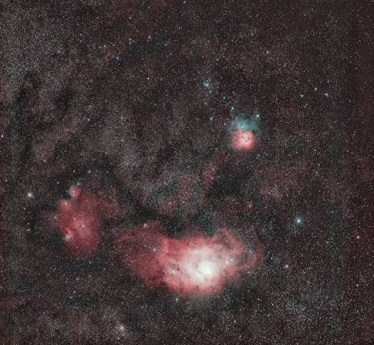
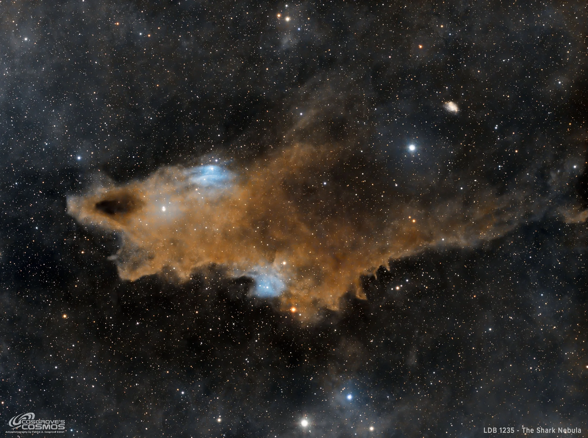
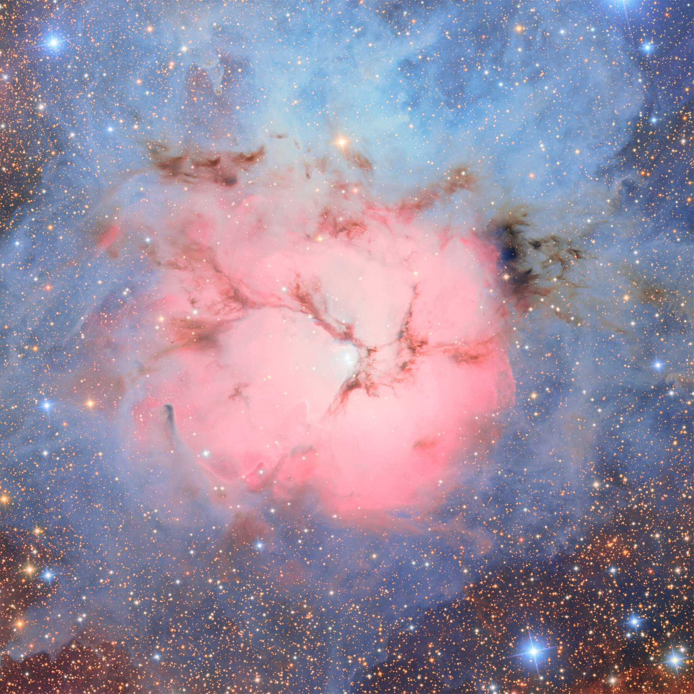
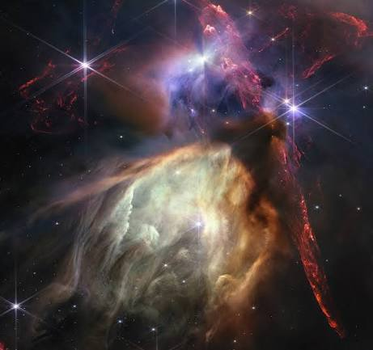
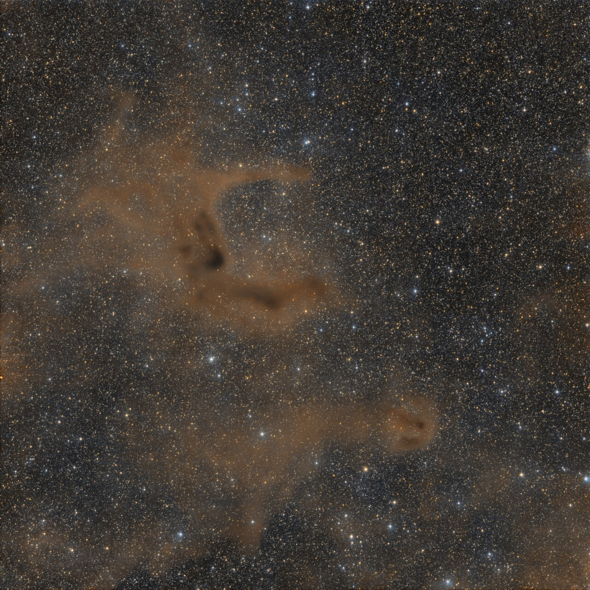
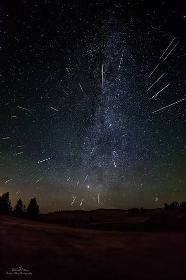
None of these are yours. They're here so you know what you're aiming at — and as a reminder that most published versions are composites with the sky scaled up. Yours will look smaller and lower relative to the landscape.
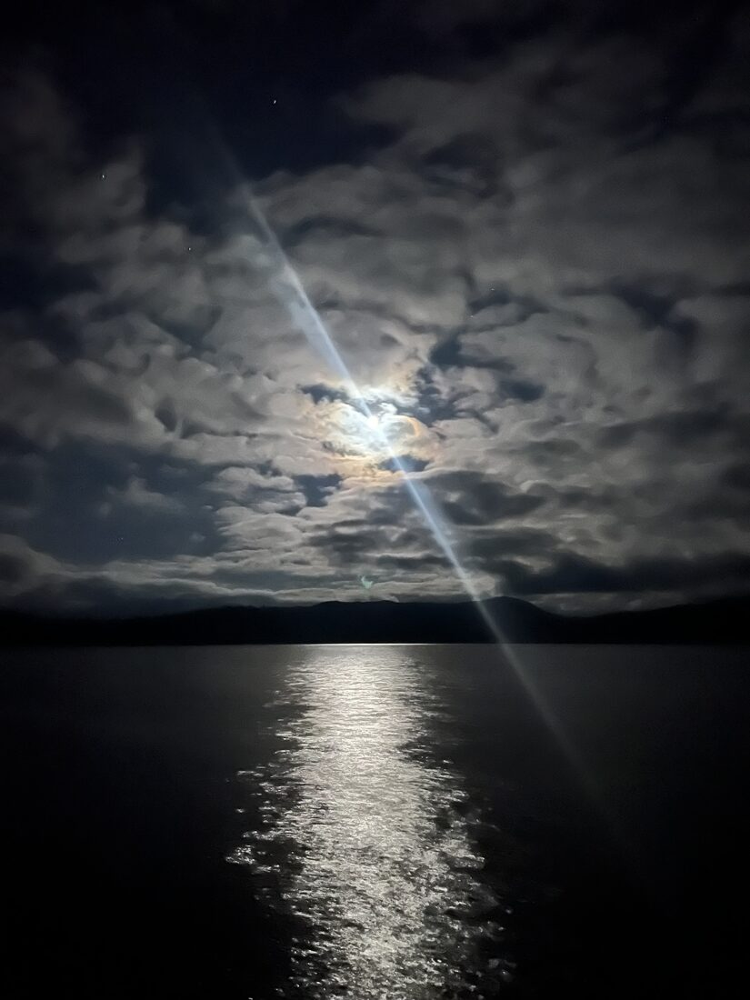
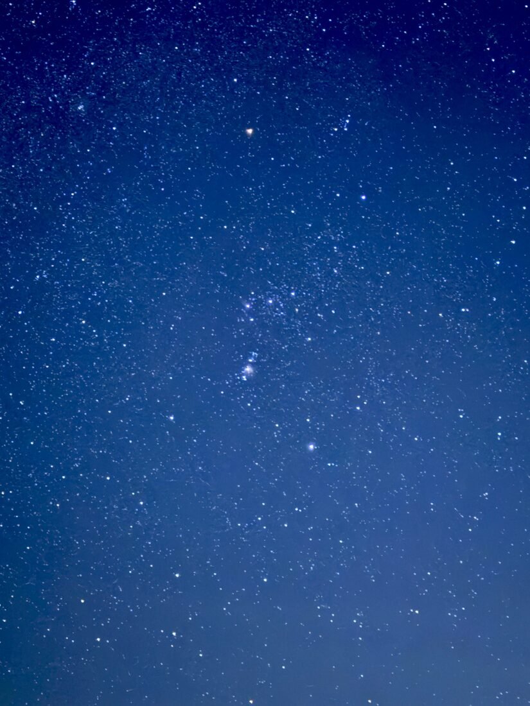
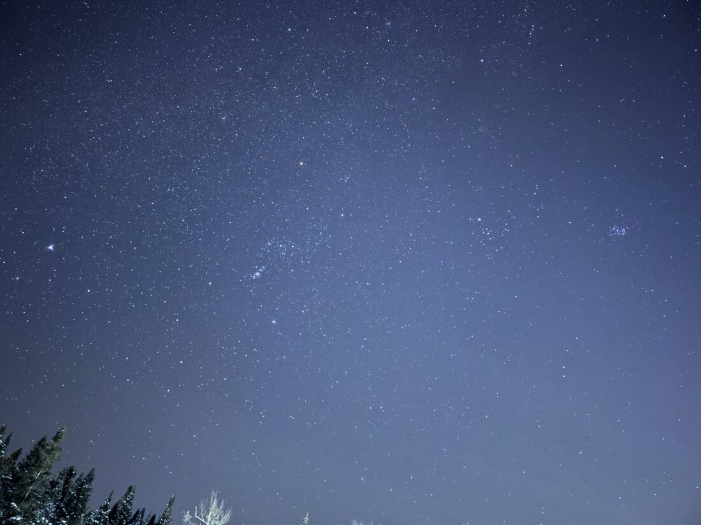
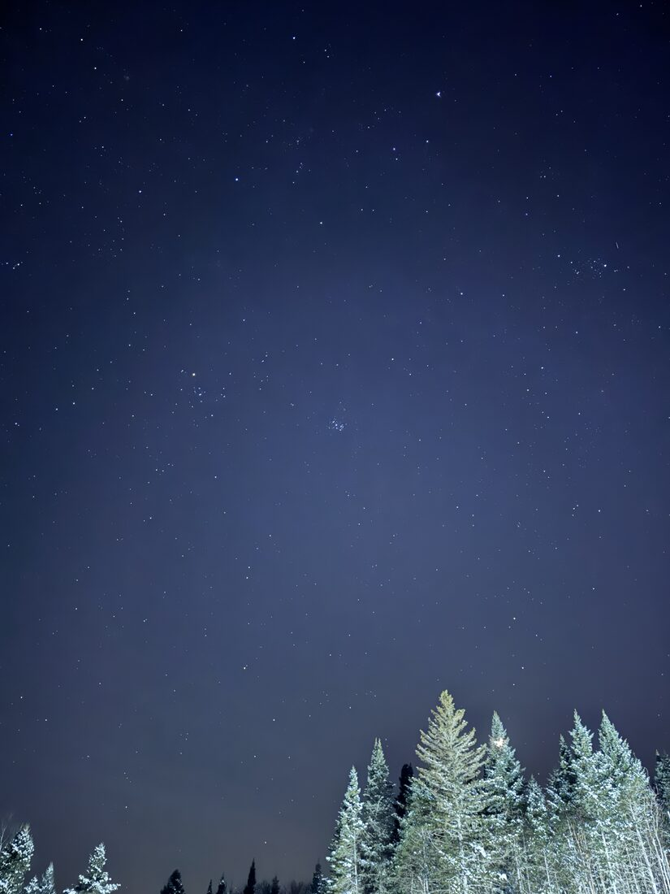
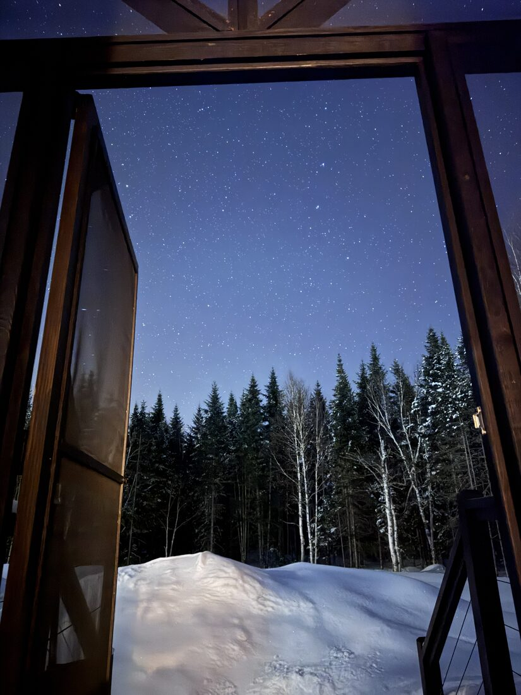
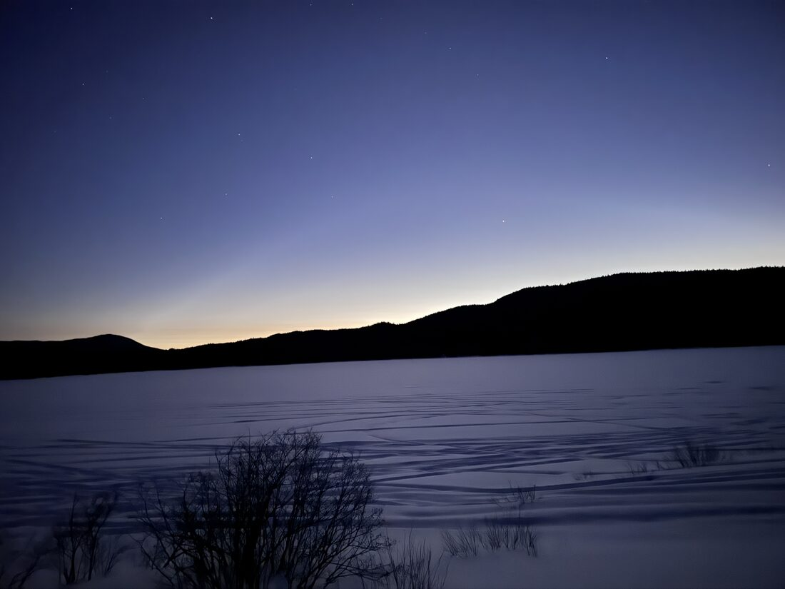
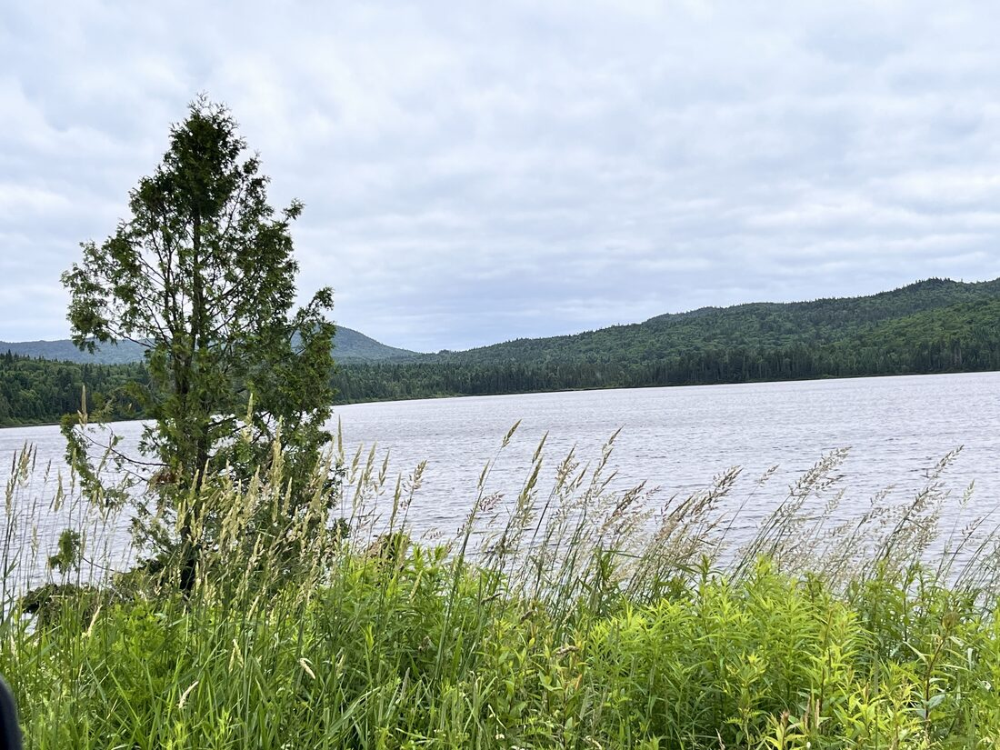
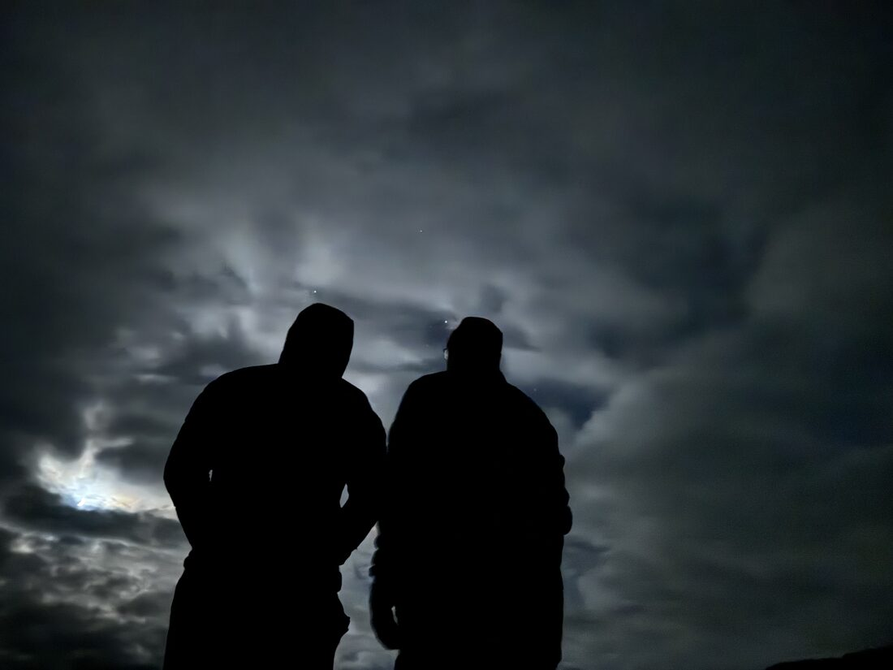
Displayed copies are resized. Originals in images/ keep their EXIF — that's where the 204.4° came from. Google Photos and messaging apps strip GPS and compass bearing, so always work from camera originals.